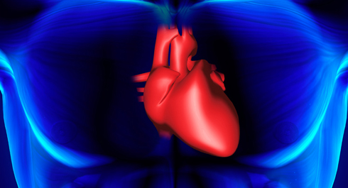

Если спросить любого спортсмена, что же он хотел бы тренировать кроме своих мышц в первую очередь, то подавляющее большинство, не задумываясь, назвали бы один крайне важный орган, состояние которого отвечает не только за наши спортивные результаты, но и за качество нашей повседневной жизни. Сегодня речь пойдет о ...
Сердце
Сердце — это большой мышечный орган, а если говорить точнее, то это вообще одна большая мышца. Сердце и обычные мышцы по строению отличают многие моменты, но нас интересует сейчас один из них — кровоснабжение. Если мышцы пронизаны сосудами и капиллярами, то из-за своей функции сердце таким образом кровоснабжаться не может. Например, изнутри сосудов в сердце нет, т.к. это мешало бы его сокращению — клетки сердца, которые находятся близко к внутренней полости получают питание непосредственно от крови, которая проходит через него.
Но и в толще сердечной мышцы сосудов находится меньше, чем в обычной скелетной, т.к. для сердца очень важно выжимать максимум эффективности с единицы площади – это мышца, которая работает круглосуточно и всю жизнь. Однако это не проблема, т.к. сердечная мышца довольно тонкая, и за счет того, что снаружи сердце очень плотно оплетено сосудами и капиллярами, кровоснабжается оно отлично.
Два типа нагрузок
Как и любая другая мышца, сердце реагирует на нагрузки, и отвечает на них определенным образом. Нагрузка на сердце может быть двух типов.
1. Нагрузка объемом - в сердце поступает кровь от тела и растягивает его. В обычных условиях эта нагрузка невелика, а вот при выполнении физических упражнений она существенно возрастает. Скелетные мышцы во время тренировки сокращаются и работают как насос, накачивая сердце кровью. Если поток такой крови большой, а нагрузка длится часами, то сердце, как и любая другая мышца, начинает растягиваться – такой себе тренинг на гибкость.
Когда все сердце тянется и увеличивается в объеме, то стенки его при этом не утолщаются, а объем камер увеличивается. Это похоже на надувание воздушного шарика – под действием нагрузки он увеличивается в объеме.
Если такие нагрузки присутствуют в течение продолжительного времени (регулярные кардиотренировки в течение нескольких месяцев или лет), то следы растягивания сердца остаются и оно увеличивается в объеме. Положительный эффект такого увеличения заключается в том, что за один удар сердце может выбросить гораздо большее количество крови. При этом число сердечных сокращений снижается — это одна из причин того, что у спортсменов пульс в покое ниже, чем у нетренированных обывателей.
Тренируют сердце на растяжение теми самыми кардиоупражнениями в зоне пульса 100-150 (обычно 100-130) ударов в минуту. Это тот диапазон сердечных сокращений, в котором в ответ на нагрузку у сердца максимально вырастает ударный объем. Отсюда, кстати, и само название "кардио", от греч. "кардиа" — сердце.
2. Нагрузка сопротивлением. Есть несколько основных случаев, когда сердцу приходится прокачивать кровь через усилие или когда его возможности значительно ниже требуемых нагрузкой:
а) Если мышцы тела сжаты в результате усилия или статической нагрузки, то сердцу приходится качать кровь со значительным усилием, чтобы преодолеть сопротивление скелетных мышц.
б) Если работа идет на очень высоком пульсе (180 и выше), то в таком режиме сердце не успевает полностью расслабиться и наполниться кровью и работает слишком часто.
в) Если человек обладает избыточной массой тела (неважно, жир это или мышцы), и сердцу приходится постоянно прокачивать кровь через массивную «тушку». Единственное преимущество гипертрофированной мускулатуры перед гипертрофированной подкожно-жировой клетчаткой в том, что если эта мускулатура работает адекватно, то сердце получает еще и нагрузку объемом, а значит растягивается.
В приведенных выше ситуациях в сердце возникает закисление, которое приводит к его гипертрофии (то есть увеличению толщины волокон сердечной мышцы), однако хотя само сердце и увеличивается в размерах, но объем его полостей не увеличивается, а это означает, что и минутный объем перекачанной крови не вырастает. Наоборот, он может даже и снижаться – ведь гипертрофия идет не только наружу, но и вовнутрь (вся толщина стенки сердца увеличивается), что дополнительно снижает объем камер сердца. Грубо говоря, на одно сокращение растянутого сердца, гипертрофированному придется сделать 2-3, т.е. сердцу приходится работать больше — причем каждую минуту, каждый день, всю жизнь. Что ее может несколько укоротить.
Второй момент — когда стенка сердца становится толще, кровь тяжелее проникает внутрь нее, и сердце начинает испытывать дефицит кислорода и питательных веществ. И хотя на первых порах дефицит кислорода приводит к дополнительной гипертрофии сердца, ещё больше увеличивая его в размерах, однако со временем это все может закончиться или дистрофией (болезненным ослаблением мышцы в результате недостаточного питания), или смертью кардиомиоцитов в результате ишемии – то есть, по сути, инфарктом.
Сердце и тренировки
Именно поэтому популярные ныне интервальные тренировки при неправильном применении могут нанести больше вреда, чем пользы. И хотя большинство любителей просто физически не обладают уровнем подготовки, чтобы заставить сердце молотить по 180 ударов в минуту, тем не менее следует быть очень осторожными с такими нагрузками.
Многие кардиологи не советуют своим пациентам заниматься силовыми тренировками, потому что с точки зрения сердца такая тренировка является разновидностью высокоинтенсивной интервальной тренировки с добавлением сопротивления мышц. Однако, опять же при условии правильного подхода к организации тренировочного процесса, силовая тренировка особой опасности для сердца не несет. Ведь, несмотря на то что именно средние по интенсивности кардионагрузки растягивают сердце лучше всего, одних их недостаточно для нормального функционирования организма – сердце ведь работает не само по себе.
При выполнении силовых упражнений нужно избегать сильного натуживания и длительного удержания тяжелого веса, скажем, в борьбе за последний рекордный повтор. По крайней мере, на каждой тренировке этого делать не нужно! Давайте отдых не только мышцам, но и сердцу. Перебивайте тяжелые упражнения легкими, или ставьте в пару два упражнения на антагонисты – это поможет «выкачать» кровь из работавшей только что мышцы, и снизит тяжесть нагрузки на сердце.
Вместо заключения
Как узнать адекватно ли развита сердечно-сосудистая система и энергетические системы организма? Во-первых, вы должны быть физически способны дать организму довольно длительную нагрузку (типа бега на 3-5 км или интенсивной езды на велосипеде в течение 30-40 минут). Напомню, что нормативы делятся по возрастным группам, а не по шкафообразности — вот и надо стремиться тренировать тело гармонично (с учетом специализации — нельзя быть спринтером и марафонцем одновременно, как и выступающим культуристом и марафонцем).Второй показатель — пульс в покое (измерять нужно утром после пробуждения, не вставая с кровати). Если он порядка 60-70 ударов в минуту, то это нормально. Если ниже — отлично; если выше — тревожный знак, что-то пора менять.
И, конечно же, раз в год-два не мешает посетить кардиолога — ЭКГ и УЗИ сердца не займут много времени, зато смогут много рассказать о вашем сердце.